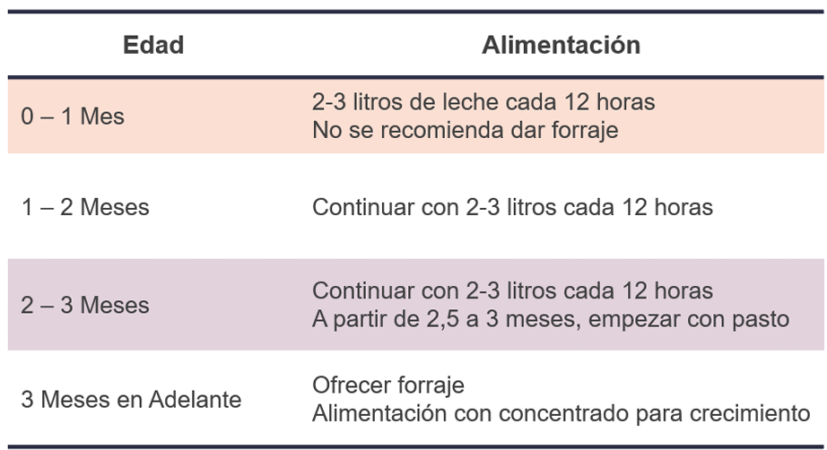

Feed Tech Solution
Optimice el cuidado de sus terneros con Feed Tech Solution. Nuestro sistema inteligente garantiza una alimentación precisa y personalizada para cada animal, mientras analiza comportamientos y emite alertas.
Nuestra Galería
Acerca de Nosotros
Feed Tech Solution es un sistema innovador de alimentación diseñado para ser utilizado por ganaderos, productores de leche, granjas, veterinarios, empresas de tecnología agrícola, así como investigadores y académicos interesados en mejorar las prácticas de alimentación y nutrición en el ganado bovino.
La solución propuesta para la automatización de la alimentación de terneras en sus primeros días de vida integra tecnología Iot (Internet de las Cosas), para ofrecer un nuevo enfoque. A través de sensores y dispositivos, se monitorea en tiempo real el consumo de alimento de cada ternera, permitiendo un suministro preciso y personalizado según las necesidades individuales de cada animal.
Servicios
1. Monitoreo
Análisis de crecimiento e identificación de patrones del ganado en sus primeros meses de vida.
2. Alimentación
Cantidad de alimento que se dispensa a cada ternero según las necesidades individuales.
3. Identificación
Caracterizar a cada animal y organizar la información de alimentación y de identidad.

4. Alertas
Mensajes emitidos por anomalía del estado de los terneros y del funcionamiento del sistema.
¿Por qué nuestro proyecto?
En el municipio de Samacá, Boyacá, nos encontramos con un ganadero con más de quince años de experiencia en la industria. Con una visión de crecimiento a largo plazo, se identifica que la alimentación de las terneras es fundamental en los primeros meses de vida.
IoT en Feed Tech Solution
El uso de la tecnología Iot permite monitorear en tiempo real el consumo de alimento de cada ternera, ajustando la cantidad y frecuencia de alimentación para optimizar su crecimiento. Además proporciona alertas sobre cualquier anomalía, permitiendo una rápida respuesta del personal encargado.
La siguiente tabla relaciona la cantidad de alimento que el sistema IoT propocionará según identifique la edad de la ternera y esto permite tener un control y que la alimentación sea más controlada.
¿Por qué elegir Feed Tech Solution?
El desarrollo de nodrizas automáticas actualmente son tecnología europea de más de 3000 dólares, por lo que, el desarrollo de este sistema resulta como una opción potencial. La implementación de este sistema fue pensando para atender las necesidades en las fincas y el entorno en que debe ser implementado.
Usuarios
¡Bienvenido al futuro de la crianza bovina! Con nuestro revolucionario sistema de monitoreo y alimentación controlada para terneras, cada paso es una puerta abierta hacia la eficiencia y el bienestar animal. Desde la identificación sin esfuerzo mediante tags hasta el preciso control de la alimentación, cada etapa se sincroniza perfectamente para garantizar el crecimiento saludable de sus terneras. Simplemente etiquete, pese, alimente y vea cómo sus terneras prosperan. ¡Es la tecnología que impulsa el futuro de su rebaño!
¿Cómo lo pongo en mi finca?
Descubra cómo nuestro innovador sistema de monitoreo y alimentación controlada para terneras se integra perfectamente en su finca. A través de un diagrama de alto nivel, visualice cada componente en acción: desde la identificación precisa con tags hasta el pesaje automático y la distribución exacta de alimento mediante actuadores inteligentes. Vea cómo cada paso del proceso se orquesta para optimizar el crecimiento y bienestar de sus terneras, convirtiendo su finca en un modelo de eficiencia y tecnología avanzada. ¡Transforme su producción ganadera con la mejor tecnología IoT disponible!
Al adquirir nuestro innovador sistema de monitoreo y alimentación controlada para terneras, disfrutarás de un dashboard totalmente personalizado y de acceso privado. Esta plataforma te permitirá visualizar y gestionar todos los aspectos del proceso de alimentación y monitoreo de tus terneras de manera intuitiva y segura, adaptándose perfectamente a las necesidades específicas de tu finca. Con un control completo y exclusivo de tus datos, optimizarás la toma de decisiones y maximizarás la eficiencia operativa. Para adquirir nuestros productos o si deseas más información, envianos un mensaje en el siguiente formulario.